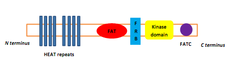
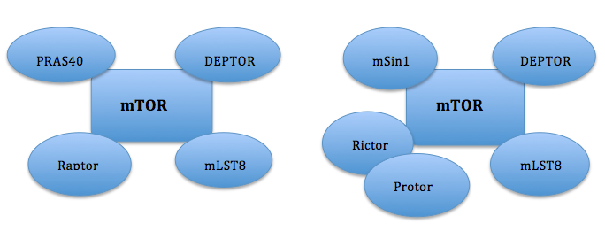
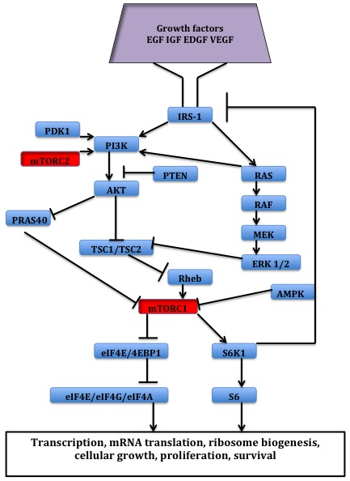
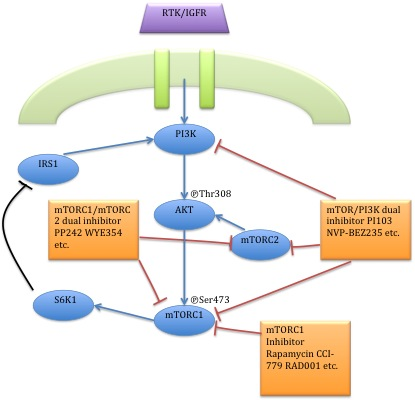
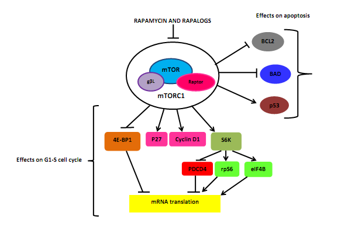
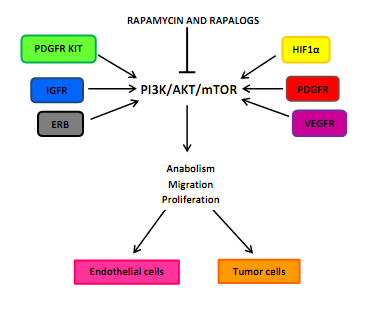

1.0 History
The discovery of mTOR was made a few decades ago while investigating the mechanism of action of its inhibitorrapamycin. Rapamycin was first discovered in 1975 in a soil sample from Easter Island of South Pacific, also known as Rapa Nui, from where its name is derived. Rapamycin is a macrolide, produced by the microorganism Streptomyces hygroscopicus and showed antifungalproperties. Shortly after its discovery, immunosuppressive properties were detected, which later led to the establishment of rapamycin as an immunosuppressant. In the 1980s, rapamycin was also found to have anticancer activity although the exact mechanism of action remained unknown until many years later. In the 1990s there was a dramatic change in this field due to studies on the mechanism of action of rapamycin and the identification of the drug target. It was found that rapamycin inhibited cellular proliferation and cell cycle progression. Research on mTOR inhibition has been a growing branch in science and has promising results.
2.0 Protein kinases and their inhibitors
In general, protein kinases are classified in two major categories based on their substrate specificity, protein tyrosine kinases and protein serine/threonine kinases. Dual-specificity kinases are subclass of the tyrosine kinases. mTOR is a kinase within the family of phosphatidylinositol-3 kinase-related kinases (PIKKs) which is a family of serine/threonine protein kinases, with a sequence similarity to the family of lipid kinases, PI3Ks. These kinases have different biological functions, but are all large proteins with common domain structure.The four domains of mTOR at the protein level. PIKKs have four domains at the protein level, which distinguish them from other protein kinases. From the N-terminus to the C-terminus, these domains are named FRAP-ATM-TRAAP (FAT), the kinase domain (KD), the PIKK-regulatory domain (PRD), and the FAT-C-terminal (FATC). The FAT domain, consisting of four α-helices, is N-terminal to KD, but that part is referred to as the FKBP12-rapamycin-binding (FRB) domain, which binds the FKBP12-rapamycin complex. The FAT domain consists of repeats, referred to as HEAT (Huntingtin, Elongation factor 3, A subunit of protein phosphatase 2A and TOR1). Specific protein activators regulate the PIKK kinases but binding of them to the kinase complex causes a conformational change that increases substrate access to the kinase domain. Protein kinases have become popular drug targets. They have been targeted for the discovery and design of small moleculeinhibitors and biologics as potential therapeutic agents. Small-molecule inhibitors of protein kinases generally prevent either phosphorylation of proteins substrates or autophosphorylation of the kinase itself.
3.0 mTOR signaling pathway
It appears that growth factors, amino acids, ATP, and oxygen levels regulate mTOR signaling. Several downstream pathways that regulate cell-cycle progression, translation, initiation, transcriptional stress responses, protein stability, and survival of cells are signaling through mTOR. Schematic components of the mTOR complexes, mTORC1 (left) and mTORC2 (right). FKBP12, the biological target to which rapamycinbinds, is a non-obligate component protein of mTORC1. The serine/threonine kinase mTOR is a downstream effector of the PI3K/AKT pathway, and forms two distinct multiprotein complexes, mTORC1 and mTORC2. These two complexes have a separate network of protein partners, feedback loops, substrates, and regulators. mTORC1 consists of mTOR and two positive regulatory subunits, raptor and mammalian LST8 (mLST8), and two negative regulators, proline-rich AKT substrate 40 (PRAS40) and DEPTOR. mTORC2 consists of mTOR, mLST8, mSin1, protor, rictor, and DEPTOR. mTORC1 is sensitive to rapamycin but mTORC2 is considered to be resistant and is generally insensitive to nutrients and energy signals. mTORC2 is activated by growth factors, phosphorylates PKCα, AKT and paxillin, and regulates the activity of the small GTPase, Rac, and Rho related to cell survival, migration and regulation of the actin cytoskeleton. The mTORC1 signaling cascade is activated by phosphorylated AKT and results in phosphorylation of S6K1, and 4EBP1, which lead to mRNA translation.
3.1 mTOR signaling pathway in human cancer
 Many human tumors occur because of dysregulation of mTOR signaling, and can confer higher susceptibility to inhibitors of mTOR. Deregulations of multiple elements of the mTOR pathway, like PI3K amplification/mutation, PTEN loss of function, AKT overexpression, and S6K1, 4EBP1, and eIF4E overexpression have been related to many types of cancers. Therefore, mTOR is an interesting therapeutic target for treating multiple cancers, both the mTOR inhibitors themselves or in combination with inhibitors of other pathways. Upstream, PI3K/AKT signalling is deregulated through a variety of mechanisms, including overexpression or activation of growth factor receptors, such as HER-2 (human epidermal growth factor receptor 2) and IGFR (insulin-like growth factor receptor), mutations in PI3K and mutations/amplifications of AKT. Tumor suppressor phosphatase and tensin homologuedeleted on chromosome 10 (PTEN) is a negative regulator of PI3K signaling. In many cancers the PTEN expression is decreased and may be downregulated through several mechanisms, including mutations, loss of heterozygosity, methylation, and protein instability. Downstream, the mTOR effectors S6 kinase 1 (S6K1), eukaryotic initiation factor 4E-binding protein 1 (4EBP1) and eukaryotic initiation factor 4E (eIF4E) are related to cellular transformation.[1] S6K1 is a key regulator of cell growth and also phosphorylates other important targets. Both eIF4E and S6K1 are included in cellular transformation and their overexpression has been linked to poor cancer prognosis.
4.0 Development of mTOR inhibitors
Since the discovery of mTOR, much research has been done on the subject, using rapamycin and rapalogs to understand its biological functions. The clinical results from targeting this pathway were not as straight forward as thought at first. Those results have changed the course of clinical research in this field. Initially, rapamycin was developed as an antifungal drug against Candida albicans, Aspergillus fumigatus and Cryptococcus neoformans. Few years later its immunosuppressive properties were detected. Later studies led to the establishment of rapamycin as a major immunosuppressant against transplant rejection, along with cyclosporine A. By using rapamycin in combination with cyclosporin A, it enhanced the rejection prevention in renal transplantation. Therefore, it was possible to use lower doses of cyclosporine which minimized toxicity of the drug. In the 1980s rapamycin was evaluated by the Developmental Therapeutic Branch of the National Cancer Institute (NCI). It was discovered that rapamycin had an anticancer activity and was a non-cytotoxic agent with cytostatic activity against several human cancer types.] However, due to unfavorable pharmacokinetic properties, the development of mTOR inhibitors for the treatment of cancer was not successful at that time. Since then, rapamycin has also shown to be effective for preventing coronary artery re-stenosis and for the treatment of neurodegenerative diseases
4.1 First generation mTOR inhibitors
The development of rapamycin as an anticancer agent began again in the 1990s with the discovery of temsirolimus (CCI-779). This was a novel soluble rapamycin derivative that had a favorable toxicological profile in animals. More rapamycin derivatives with improved pharmacokinetics and reduced immunosuppressive effects have since then been developed for the treatment of cancer. These rapalogs include temsirolimus (CCI-779), everolimus (RAD001), and ridaforolimus (AP-23573) which are being evaluated in cancer clinical trials. Rapamycin analogs have similar therapeutic effects as rapamycin. However they have improved hydrophilicity and can be used for oral and intravenous administration. In 2012 National Cancer Institute listed more than 200 clinical trials testing the anticancer activity of rapalogs both as monotherapy or as a part of combination therapy for many cancer types. Rapalogs, which are the first generation mTOR inhibitors, have proven effective in a range of preclinical models. However, the success in clinical trials is limited to only a few rare cancers. Animal and clinical studies show that rapalogs are primarily cytostatic, and therefore effective as disease stabilizers rather than for regression. The response rate in solid tumors where rapalogs have been used as a single-agent therapy have been modest. Due to partial mTOR inhibition as mentioned before, rapalogs are not sufficient for achieving a broad and robust anticancer effect, at least when used as monotherapy. Another reason for the limited success is that there is a feedback loop between mTORC1 and AKT in certain tumor cells. It seems that mTORC1 inhibition by rapalogs fails to repress a negative feedback loop that results in phosphorylation and activation of AKT. These limitations have led to the development of the second generation of mTOR inhibitors.
4.2 Rapamycin and rapalogs
Rapamycin and rapalogs (rapamycin derivatives) are small molecule inhibitors, which have been evaluated as anticancer agents. The rapalogs have more favorable pharmacokinetic profile compared to rapamycin, the parent drug, despite the same binding sites for mTOR and FKBP12.
4.2.1 Sirolimus
The natural antibiotic, rapamycin or sirolimus, a cytostatic agent, has been used in combination therapy withcorticosteroidsandcyclosporinein patients who receivedkidney transplantationto preventorgan rejectionboth in the USand Europe,due to its unsatisfying pharmacokinetic properties.In 2003, theU.S. Food and Drug Administrationapproved sirolimus-eluting coronary stents, which are used in patients with narrowing ofcoronary arteries, or so-calledatherosclerosis. Recently rapamycin has shown effective in the inhibition of growth of several human cancers and murine cell lines.Rapamycin is the main mTOR inhibitor, but deforolimus (AP23573), everolimus (RAD001), and temsirolimus (CCI-779), are the newly developed rapamycin analogs.
4.2.2 Temsirolimus
The rapamycin analog, temsirolimus (CCI-779) is also a noncytotoxic agent which delays tumor proliferation. Temsirolimus is pro-drug of rapamycin. It is approved by the U.S. Food and Drug Administration (FDA) and the European Medicines Agency (EMA), for the treatment of renal cell carcinoma (RCC). Temsirolimus has higher water solubility than rapamycin and is therefore administrated by intravenous injection. It was approved in May 30, 2007, by FDA for the treatment of advanced RCC.
4.2.3 Everolimus
Everolimus is the second novel Rapamycin analog. From March 30, 2009 to May 5, 2011 the U.S. FDA approved everolimus for the treatment of advanced renal cell carcinoma after failure of treatment with sunitinib or sorafenib, subependymal giant cell astrocytoma (SEGA) associated with tuberous sclerosis (TS), and progressive neuroendocrine tumors of pancreatic origin (PNET). In July and August 2012, two new indications were approved, for advanced hormone receptor-positive, HER2-negative breast cancer in combination with exemestane, and pediatric and adult patients with SEGA. In 2009 and 2011, it was also approved throughout the European Union for advanced breast cancer, pancreatic neuroendocrine tumours, advanced renal cell carcinoma, and SEGA in patients with tuberous sclerosis.
4.2.4 Ridaforolimus
(AP23573, MK-8669), or deforolimus, is the newest rapamycin analog and it is not a prodrug. Like temsirolimus it can be administrated intravenously, and oral formulation is being estimated for treatment ofsarcoma.It was not on market in June 2012, since FDA wanted more human testing on it due to its effectiveness and safety.
4.3 Second generation mTOR inhibitors
 Action point of first and second generation mTOR inhibitors on PI3K/AKT/mTOR pathway. The second generation of mTOR inhibitors is known as ATP-competitive mTOR kinase inhibitors. mTORC1/mTORC2 dual inhibitors are designed to compete with ATP in the catalyticsite of mTOR. They inhibit all of the kinase-dependent functions of mTORC1 and mTORC2 and therefore, block the feedback activation of PI3K/AKT signaling, unlike rapalogs that only target mTORC1. These types of inhibitors have been developed and several of them are being tested in clinical trials. Like rapalogs, they decrease protein translation, attenuate cell cycle progression, and inhibit angiogenesis in many cancer cell lines and also in human cancer. In fact they have been proven to be more potent than rapalogs. Theoretically, the most important advantages of these mTOR inhibitors is the considerable decrease of AKT phosphorylation on mTORC2 blockade and in addition to a better inhibition on mTORC1. However, some drawbacks exist. Even though these compounds have been effective in rapamycin-insensitive cell lines, they have only shown limited success in KRAS driven tumors. This suggests that combinational therapy may be necessary for the treatment of these cancers. Another drawback is also their potential toxicity. These facts have raised concerns about the long term efficacy of these types of inhibitors.The close interaction of mTOR with the PI3K pathway has also led to the development of mTOR/PI3K dual inhibitors. Compared with drugs that inhibit either mTORC1 or PI3K, these drugs have the benefit of inhibiting mTORC1, mTORC2, and all the catalytic isoforms of PI3K. Targeting both kinases at the same time reduces the upregulation of PI3K, which is typically produced with an inhibition on mTORC1. The inhibition of the PI3K/mTOR pathway has been shown to potently block proliferation by inducing G1 arrest in different tumor cell lines. Strong induction of apoptosis and autophagy has also been seen. Despite good promising results, there are preclinical evidence that some types of cancers may be insensitive to this dual inhibition. The dual PI3K/mTOR inhibitors are also likely to have increased toxicity.
5.0 Mechanism of action
The studies of rapamycin as immunosuppressive agent enabled us to understand its mechanism of action. It inhibits T-cell proliferation and proliferative responses induced by several cytokines, including interleukin 1 (IL-1), IL-2, IL-3, IL-4, IL-6, IGF, PDGF, and colony-stimulating factors (CSFs). Rapamycin inhibitors and rapalogs can target tumor growth both directly and indirectly. Direct impact of them on cancer cells depend on the concentration of the drug and certain cellular characteristics. The indirect way, is based on interaction with processes required for tumor angiogenesis
5.1 Effects in cancer cells
Effects of Rapamycin and rapalogs in cancer cells. Rapamycin and rapalogs crosslink the immunophilin FK506 binding protein, tacrolimus or FKBP-12, through its methoxy group. The rapamycin-FKBP12 complex interferes with FRB domain of mTOR. Molecular interaction between FKBP12, mTOR, and rapamycin can last for about three days (72 hours). The inhibition of mTOR blocks the binding of the accessory protein raptor (regulatory-associated protein of mTOR) to mTOR, but that is necessary for downstream phosphorylation of S6K1 and 4EBP1. As a consequence, S6K1 dephosphorylates, which reduces protein synthesis and decreases cell motality and size. Rapamycin induces dephosphorylation of 4EBP1 as well, resulting in an increase in p27 and a decrease in cyclin D1 expression. That leads to late blockage of G1/S cell cycle. Rapamycin has shown to induce cancer cell death by stimulating autophagy or apoptosis, but the molecular mechanism of apoptosis in cancer cells has not yet been fully resolved. One suggestion of the relation between mTOR inhibition and apoptosis might be through the downstream target S6K1, which can phosphorylate BAD, a pro-apoptotic molecule, on Ser136.[5] That reaction breaks the binding of BAD to BCL-XL and BCL2, a mitochondrial death inhibitors, resulting in inactivation of BAD and decreased cell survival. Rapamycin has also shown to induce p53-independent apoptosis in certain types of cancer.
5.2 Effects on tumor angiogenesis
Effects of Rapamycin and rapalogs on endothelial and tumor cells. Tumor angiogenesis rely on interactions between endothelial vascular growth factors which can all activate the PI3K/AKT/mTOR in endothelial cells, pericytes, or cancer cells. Example of these growth factors are angiopoietin 1 (ANG1), ANG 2, basic fibroblast growth factor (bFGF), ephrin-B2, vascular enothelial growth factor (VEGF), and members of the tumor growth factor-β (TGFβ) superfamily. One of the major stimuli of angiogenesis is hypoxia, resulting in activation of hypoxia-inducible transcription factors (HIFs) and expression of ANG2, bFGF, PDGF, VEGF, and VEGFR. Inhibition of HIF1α translation by preventing PDGF/PDGFR and VEGF/VEGFR can result from mTOR inhibition. A G0-G1 cell-cycle blockage can be the consequence of inactivation of mTOR in hypoxia-activated pericytes and endothelial cells. There are some evidence that extended therapy with rapamycin may have effect on AKT and mTORC2 as well.
6.0 Structure activity relationship
The pipecolate region of rapamycin structure seems necessary for rapamycin-binding to FKBP12. This step is required for further binding of rapamycin to the mTOR kinase, which is the key enzyme in many biological actions of rapamycin. The high affinity of rapamycin binding to FKBP12 is explained by number of hydrogen bonds through two different hydrophobic binding pockets, and this has been revealed by X-ray crystal structure of the compound bound to the protein. The structural characteristics common to temsirolimus and sirolimus; the pipecolic acid, tricarbonyl region from C13-C15, and lactone functionalities play the key role in binding groups with the FKBP12. The most important hydrogen bonds are the lactone carbonyl oxygen at C-21 to the backbone NH of Ile56, amide carbonyl at C-15 to the phenolic group on the sidechain of Tyr82, and the hydroxyl proton at the hemiketal carbon, C-13, to the sidechain of Asp37. Binding sites of rapamycin: Green ring (pipecolate region) represents binding region to FKBP12 and purple ring represents binding region to mTOR. Structural changes to the rapamycin structure can affect binding to mTOR. This could include both direct and indirect binding as a part of binding to FKBP12. Interaction of the FKBP12-rapamycin complex with mTOR corresponds with conformational flexibility of the effector domain of rapamycin. This domain consists of molecular regions that make hydrophobic interactions with the FKB domain and triene region from C-1-C-6, methoxy group at C-7, and methyl groups at C-33, C-27 and C-25. All changes of the macrolide ring can have unpredictible effects on binding and therefore, make determination of SAR for rapalogs problematic. Rapamycin contains no functional groups that ionize in the pH range 1-10 and therefore, are rather insoluble in water. Despite its effectiveness in preclinic cancer models, its poor solubility in water, stability, and the long half-life elimination made its parenteral use difficult, but the development of soluble rapamycin analogs vanquished various barriers. Nonetheless, the rapamycin analogs that have been approved for human use are modified at C-43 hydroxyl group and show improvement in pharmacokinetic parameters as well as drug properties, for example solubility. Rapamycin and temsirolimus have similar chemical structures and bind to FKBP12, though their mechanism of action differs. Temsirolimus is a dihydroxymethyl propionic acid ester of rapamycin, and its first derivative. Therefore, it is more water-soluble, and due to its watersolubility it can be given by intravenous formulation. Everolimus has O-2 hydroxyethyl chain substitution and deforolimus has a phosphine oxide substitution at position C-43 in the lactone ring of rapamycin. Deforolimus (Ridaforolimus ) has C43 secondary alcohol moiety of the cyclohexyl group of Rapamycin that was substituted with phosphonate and phosphinate groups, preventing the high-affinity binding to mTOR and FKBP. Computational modelling studies helped the synthesise of the compound.
Binding sites of rapamycin: Green ring (pipecolate region) represents binding region to FKBP12 and purple ring represents binding region to mTOR. Structural changes to the rapamycin structure can affect binding to mTOR. This could include both direct and indirect binding as a part of binding to FKBP12. Interaction of the FKBP12-rapamycin complex with mTOR corresponds with conformational flexibility of the effector domain of rapamycin. This domain consists of molecular regions that make hydrophobic interactions with the FKB domain and triene region from C-1-C-6, methoxy group at C-7, and methyl groups at C-33, C-27 and C-25. All changes of the macrolide ring can have unpredictible effects on binding and therefore, make determination of SAR for rapalogs problematic. Rapamycin contains no functional groups that ionize in the pH range 1-10 and therefore, are rather insoluble in water. Despite its effectiveness in preclinic cancer models, its poor solubility in water, stability, and the long half-life elimination made its parenteral use difficult, but the development of soluble rapamycin analogs vanquished various barriers. Nonetheless, the rapamycin analogs that have been approved for human use are modified at C-43 hydroxyl group and show improvement in pharmacokinetic parameters as well as drug properties, for example solubility. Rapamycin and temsirolimus have similar chemical structures and bind to FKBP12, though their mechanism of action differs. Temsirolimus is a dihydroxymethyl propionic acid ester of rapamycin, and its first derivative. Therefore, it is more water-soluble, and due to its watersolubility it can be given by intravenous formulation. Everolimus has O-2 hydroxyethyl chain substitution and deforolimus has a phosphine oxide substitution at position C-43 in the lactone ring of rapamycin. Deforolimus (Ridaforolimus ) has C43 secondary alcohol moiety of the cyclohexyl group of Rapamycin that was substituted with phosphonate and phosphinate groups, preventing the high-affinity binding to mTOR and FKBP. Computational modelling studies helped the synthesise of the compound.
7.0 Adverse events
Treatment with mTOR inhibitors can be complicated by adverse events. The most frequently occurring adverse events are stomatitis, rash, anemia, fatigue, hyperglycemia/hypertriglyceridemia, decreased appetite, nausea, and diarrhea. Additionally, interstitial lung disease is an adverse event of particular importance. mTORi-induced ILD often is asymptomatic (with ground glass abnormalities on chest CT) or mild symptomatic (with a non-productive cough), but can be very severe as well. Even fatalities have been described. Careful diagnosis and treatment therefore is essential. Recently, a new diagnostic and therapeutic management approach has been proposed.
8.0 Biomarkers
Identification of predictive biomarkers of efficacy for tumor types that are sensitive to mTOR inhibitors remains a major issue.[1][38] Possible predictive biomarkers for tumor response to mTOR inhibitors, as have been described in glioblastoma, breast and prostate cancer cells, may be the differential expression of mTOR pathway proteins, PTEN, AKT, and S6. Thus, this data is based on preclinical assays, based on in vitro cultured tumor cell lines, which suggest that the effects of mTOR inhibitors may be more pronounced in cancers displaying loss of PTEN functions or PIK3CA mutations. However, the use of PTEN, PIK3CA mutations, and AKT–phospho status for predicting rapalog sensitivity has not been fully validated in clinic. To date, attempts to identify biomarkers of rapalog response have been unsuccessful.
8.1 Sensitivity
Clinical and translational data suggest that sensitive tumor types, with adequate parameters and functional apoptosis pathways, might not need high doses of mTOR inhibitors to trigger apoptosis. In most cases, cancer cells might only be partially sensitive to mTOR inhibitors due to redundant signal transduction or lack of functional apoptosis signaling pathways. In situations like this, high doses of mTOR inhibitors might be required. In recent study of patients with Renal cell carcinoma, resistance to Temsirolimus was associated with low levels of p-AKT and p-S6K1, that play the key role in mTOR activation. These data strongly suggests number of tumors with an activated PI3K/AKT/mTOR signaling pathway that does not respond to mTOR inhibitors. For future studies it is recommended to exclude patients with low or negative p-AKT levels from trials with mTOR inhibitors. Current data is insufficient to predict sensitivity of tumors to rapamycin. However, the existing data allows us to characterize tumors that might not respond to rapalogs.
9.0 ATP-competitive mTOR kinase inhibitors
These second generation mTOR inhibitors bind to ATP-binding site in mTOR kinase domain required for the functions of both mTORC1 and mTORC2, and result in downregulation of mTOR signaling pathway. Due to PI3K and mTORC2 ability to regulate AKT phosphorylation, these two compounds play a key role in minimizing the feedback activation of AKT.
9.1 mTOR/PI3K dual inhibitors
Several, so-called mTOR/PI3K dual inhibitors (TPdIs), have been developed and are in early-stage preclinical trials and show promising results. Their development has been benefited from previous studies with PI3K-selective inhibitors.[20] The activity of these small molecules from rapalog activity differs in the way by blocking both mTORC1-dependent phospholylation of S6K1 and mTORC2-dependent phosphorylation of AKT Ser473 residue. Dactolisib chemical structure. Dual mTOR/PI3K inhibitors include dactolisib, BGT226, SF1126, PKI-587 and many more. For example, Novartis has developed the compound NVPBE235 that was reported to inhibit tumor growth in various preclinical models. It enhances antitumor activity of some other drugs such as vincristine. Dactolisib seems to inhibit effectively both wild-type and mutant form of PI3KCA, which suggests its use towards wide types of tumors. Studies have shown superior antiproliferative activity to rapalogs and in vivo models have confirmed these potent antineoplastic effects of dual mTOR/PI3K inhibitors. These inhibitors target isoforms of PI3K (p110α, β and γ) along with ATP-binding sites of mTORC1 and mTORC2 by blocking PI3K/AKT signaling, even in cancer types with mutations in this pathway.
9.2 mTORC1/mTORC2 dual inhibitors (TORCdIs)
 Sapanisertib (INK-128): chemical structure
New mTOR-specific inhibitors came forth from screening and drug discovery efforts. These compounds block activity of both mTOR complexes and are called mTORC1/mTORC2 dual inhibitors. Compounds with this characteristics such as sapanisertib (codenamed INK128), AZD8055, and AZD2014 have entered clinical trials. A series of these mTOR kinase inhibitors have been studied. Their structure is derived from morpholino pyrazolopyrimidine scaffold. Improvements of this type of inhibitors have been made by exchanging the morpholines with bridged morpholines in pyrazolopyrimidine inhibitors and results showed increased selectivity to mTOR by 26000 fold.
Sapanisertib (INK-128): chemical structure
New mTOR-specific inhibitors came forth from screening and drug discovery efforts. These compounds block activity of both mTOR complexes and are called mTORC1/mTORC2 dual inhibitors. Compounds with this characteristics such as sapanisertib (codenamed INK128), AZD8055, and AZD2014 have entered clinical trials. A series of these mTOR kinase inhibitors have been studied. Their structure is derived from morpholino pyrazolopyrimidine scaffold. Improvements of this type of inhibitors have been made by exchanging the morpholines with bridged morpholines in pyrazolopyrimidine inhibitors and results showed increased selectivity to mTOR by 26000 fold.
9.3 Limitations of new generation mTOR inhibitors
Although the new generation of mTOR inhibitors hold great promise for anticancer therapy and are rapidly moving into clinical trials, there are many important issues that determine their success in the clinic. First of all predictable biomarkers for benefit of these inhibitors are not available. It appears that genetic determinants predispose cancer cells to be sensitive or resistant to these compounds. Tumors that depend on PI3K/mTOR pathway should respond to these agents but it is unclear if compounds are effective in cancers with distinct genetic lesions. Inhibition of mTOR is a promising strategy for treatment of number of cancers. Limited clinical activity of selective mTORC1 agents have made them unlikely to have impact in cancer treatment. The development of competitive ATP-catalytic inhibitors has the ability to block both mTORC1 and mTORC2.
10.0 Future
The limitations of currently available rapalogs have led to new approaches to mTOR targeting. Studies suggest that mTOR inhibitors may have anticancer activity in many cancer types, such as RCC, neuroendocrine tumors, breast cancer, hepatocellular carcinoma, sarcoma, and large B-cell lymphoma.[3] One major limitation for the development of mTOR inhibition therapy is that biomarkers are not presently available to predict which patient will respond to them. A better understanding of the molecular mechanisms that are involved in the response of cancer cells to mTOR inhibitors are still required so this can be possible. A way to overcome the resistance and improve efficacy of mTOR targeting agents may be with stratification of patients and selection of drug combination therapies. This may lead to a more effective and personalized cancer therapy. Although further research is needed, mTOR targeting still remains an attractive and promising therapeutic option for the treatment of cancer.